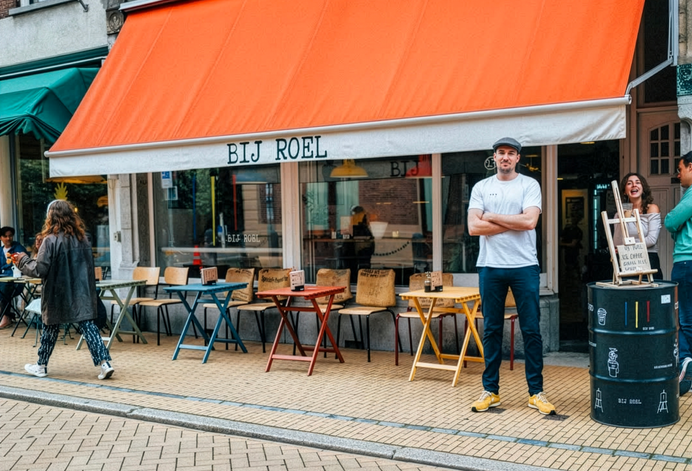

Contact & Bezoek
Kom langs voor een kop koffie, stel je vragen over onze bonen of reserveer een tafel voor je groep. We zijn er bijna elke dag.
- Oude Kijk in 't Jatstraat 27, Groningen
- Maandag t/m vrijdag: 07:30 – 17:00
- Zaterdag & zondag: 09:30 – 17:00

Hoe ons te bereiken
Adres
Oude Kijk in 't Jatstraat 27
9712 EB Groningen
Op loopafstand van het Academiegebouw en de Vismarkt. Gratis fietsparkeren voor de deur.
Openingstijden
MA – VR 07:30 – 17:00
ZA & ZO 09:30 – 17:00
Op feestdagen kunnen de tijden afwijken.
Check onze Instagram voor actuele info.
E-mail & Socials
koffie@bijroel.nl
Volg ons op Instagram en Facebook voor seizoensspecials, latte art en het laatste nieuws uit de winkel.
Reserveren voor een groep? Voor 4 of meer personen reserveren we graag van tevoren een tafel. Stuur een bericht hieronder of mail direct naar koffie@bijroel.nl — we reageren binnen één werkdag.